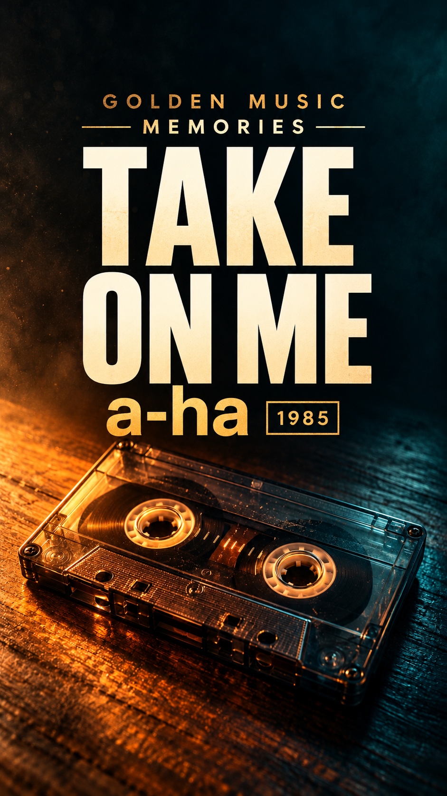
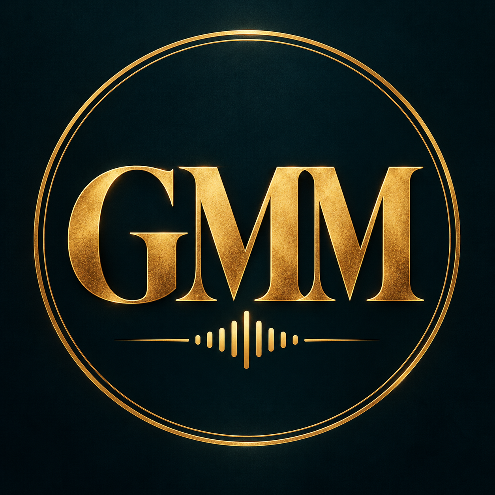

Capa da primeira música
Título e artista em destaque. Confira o recorte dentro de cada plataforma.
Salvar capa PNG
Anos 70 · 80 · 90 · 2000
Guia de estreia e primeiros 30 dias · preparado em 23/10/2026
Abra este endereço em qualquer computador para acessar os materiais. No criador de capas, copie o link da configuração para continuar a edição em outro dispositivo.
A estreia está preparada visualmente. Escolha o áudio oficial disponível na sua conta e revise a postagem no aplicativo.
Comece por aqui
Uma identidade própria, uma lembrança de 1985 e uma pergunta para abrir a conversa.
30 segundos · formato vertical · prévia sem áudio. A capa acima também é um arquivo separado.
TikTok: @Golden_Music_Memories aceito, conforme sua confirmação.
YouTube: registro do identificador ainda não confirmado. A consulta pública retornou página não encontrada em 23/10/2026; isso não garante disponibilidade.
As caixas servem apenas para sua conferência nesta página; marcá-las não altera as plataformas nem publica conteúdo.
Salvar vídeo sem áudio
Título e artista em destaque. Confira o recorte dentro de cada plataforma.
Salvar capa PNGO que os materiais mostram
As capturas fornecidas mostram uma proposta reconhecível: nostalgia musical, décadas na bio, capas recorrentes e perguntas implícitas sobre memória afetiva. Nas capturas, o perfil exibe 295,4 mil seguidores e 3 milhões de curtidas. Esses números descrevem os prints recebidos; não são uma medição atual e não comprovam receita.
Os três vídeos fixados aparecem com aproximadamente 1,1 milhão, 2,3 milhões e 3,2 milhões de visualizações. Outros vídeos visíveis têm números bem menores. Isso mostra a variação entre publicações, sem permitir calcular uma média confiável nem atribuir o resultado somente à capa.
No vídeo, a identificação visual explícita é Pretenders — I’ll Stand by You — 1994, com a marca d’água @foi.sucesso. Os frames iniciais analisados usam cenas de cidades e paisagens em faixa horizontal, grandes margens pretas e legendas pequenas em inglês. A partir de um frame de 1min50s, já aparece o disco com retrato da artista, nome da banda, música, ano e braço de toca-discos.
O disco aparece em ângulos diferentes, inclusive com texto inclinado ou invertido. Para nossa identidade, o título da música e o artista ficam fixos e separados da animação, com maior leitura no celular. A inspiração é a consistência; as artes do kit são próprias.
Limite da análise: foram examinados metadados e 11 frames distribuídos pelo arquivo. Não houve escuta nem transcrição do áudio, medição da frequência de cortes ou conferência de sincronismo das legendas. Não há acesso às receitas, licenças ou métricas internas do canal de referência.
Preparado em 23/10/2026. Proposta: reviver músicas dos anos 70, 80, 90 e 2000 com identidade própria, comentários em português e participação do público. Estreia escolhida: Take On Me — a-ha, versão de 1985.
Situação atual: o usuário informou que o TikTok aceitou Golden_Music_Memories. O identificador no YouTube continua pendente. Este material prepara a publicação: não confirma que o áudio esteja disponível na conta nem que qualquer vídeo tenha sido publicado.
Use Golden Music Memories como nome exibido, com espaços. Mantenha @Golden_Music_Memories como identificador do TikTok. No YouTube, tente o mesmo identificador no campo de configuração; se não for aceito, teste uma variação curta e coerente. Um resultado vazio de busca não comprova disponibilidade.
Bio do TikTok, abaixo de 80 caracteres:
🎶 Anos 70, 80, 90 e 2000 ✨ Dê play nas suas melhores lembranças!
Descrição para a seção Sobre do YouTube:
Músicas que atravessam gerações. No Golden Music Memories, revisitamos clássicos dos anos 70, 80, 90 e 2000 com histórias, curiosidades e lembranças em português. Qual canção faz você voltar no tempo? Inscreva-se e participe da escolha dos próximos episódios.
O público inicial é brasileiro e gosta de nostalgia musical. A marca pode ser inglesa, mas títulos explicativos, narração e perguntas devem ser em português. Organize séries como “Memória dos 80”, “História por trás do hit” e “Qual versão marcou você?”.
Para começar, mantenha uma conta pessoal de criador no TikTok, necessária ao Programa de Recompensas. Ative a verificação em duas etapas e confira recuperação de acesso. Não é preciso comprar ferramentas ou assinatura musical para fazer a primeira publicação.
Os prints do Foi Sucesso mostram uma proposta fácil de reconhecer: nostalgia, repertório conhecido, capas recorrentes e vídeos que associam música a lembranças. Os números exibidos são um retrato das capturas, sem comprovação de receita ou de desempenho atual.
Podemos aproveitar a consistência visual e a clareza do tema. Nossa diferenciação será o comentário em português, a pesquisa sobre cada música e a conversa com o público. Copiar uma capa ou trocar apenas o título não cria uma proposta própria.
Padrão visual sugerido: preto #101112, âmbar #D9A441, petróleo #123D43 e branco quente #F6F0E4. A música recebe a maior hierarquia; abaixo entram artista e ano ou década. A marca fica menor, sempre na mesma posição. Na estreia: “TAKE ON ME”, “a-ha” e “VERSÃO 1985”.
Produza vídeos verticais em 1080 × 1920. Deixe textos principais afastados das bordas, dos botões à direita e da legenda inferior; confira a prévia no celular. Para vídeos longos do YouTube, produza uma miniatura horizontal específica. Uma capa consistente ajuda reconhecimento, mas o modelo visual por si só não torna o conteúdo original.
Para um hit como Take On Me, a primeira opção é procurar a gravação oficial no seletor de áudio de cada plataforma. No TikTok, busque pelo título e artista em “Adicionar som”. No aplicativo do YouTube, procure no seletor de áudio dos Shorts. Confira artista, versão e duração disponível; evite escolher uma cópia publicada por outra pessoa apenas porque tem muitas utilizações.
O vídeo visual deve ser exportado sem essa música protegida. Depois, adicione o som no TikTok e repita o processo separadamente no YouTube. A autorização de uma plataforma não deve ser presumida na outra. O YouTube orienta a usar a faixa oficial pelo seletor; músicas incorporadas fora da biblioteca ficam sujeitas às regras normais de reivindicação e remoção. Orientação do YouTube para artistas, direitos em Shorts.
No Shorts, algumas músicas permitem até 90 segundos, outras 60 ou 30. O aplicativo informa o limite aplicável. Para nossa peça de 30 segundos, use somente um trecho permitido. Se a faixa não aparecer ou não permitir o trecho necessário, adapte a edição ou escolha outra; não contorne a restrição. Durações e músicas em Shorts.
Para baixar trilhas de fundo de narração, use a Biblioteca de áudio do YouTube Studio, conferindo atribuição e licença de cada faixa, ou o Pixabay Music, seguindo sua licença. Essas fontes não devem ser tratadas como catálogos de gravações famosas liberadas. Guarde o link, autor, nome da faixa, licença e data do download; no Pixabay, algumas músicas podem gerar Content ID, mesmo licenciadas. FAQ do Pixabay.
Comprar uma música para ouvir não equivale a obter os direitos de publicá-la em vídeo. Para incorporar comercialmente gravações famosas fora das ferramentas licenciadas, é necessário verificar os direitos do fonograma e da composição para esse uso. Não use conversores de vídeos ou arquivos de origem incerta como fundamento da operação.
Quando houver publicidade, afiliado ou promoção de produto no TikTok, use música da Biblioteca de Música Comercial ou licenças próprias adequadas. A licença da biblioteca geral não cobre automaticamente conteúdo promocional. Política comercial do TikTok.
Use cenas próprias, elementos gráficos originais ou arquivos licenciados do Pexels e do Pixabay. Buscas úteis: toca-discos, fita cassete, rádio, cidade à noite, chuva na janela, estrada e luzes de pista. Escolha materiais verticais e com espaço para texto.
Esses bancos permitem adaptações dentro de suas licenças, mas pessoas, marcas e obras retratadas podem envolver direitos adicionais. Não use uma fotografia de banco como marca registrada e não presuma que foto de cantor, capa de álbum ou trecho de videoclipe está liberado porque apareceu em uma pesquisa. Arquive a página do material e as condições de uso.
Vale usar português? Sim, principalmente nas nossas falas, curiosidades e perguntas. Isso aproxima o conteúdo do público e melhora a compreensão sem som. Use frases curtas, contraste alto e poucas palavras por tela. Revise nomes próprios e o sincronismo das legendas automáticas.
Traduzir integralmente a letra é uma decisão diferente de legendar nossa narração. A licença do áudio não comprova autorização para exibir uma tradução da letra. A legislação brasileira inclui tradução e inclusão em audiovisual entre usos sujeitos à autorização, ressalvadas as hipóteses legais. Para começar, use comentários originais sobre a música, sem reproduzir sua letra ou tradução completa. Lei 9.610/98, art. 29.
A primeira peça tem 30 segundos e funciona como teste de descoberta e apresentação. Ela não atende ao requisito de duração do TikTok Creator Rewards. Sua função é testar repertório, identidade e interesse do público.
Descrição pronta:
Take On Me — a-ha 🎶 Nossa primeira viagem é para 1985. Qual lembrança essa música traz para você? Bem-vindo ao Golden Music Memories! #TakeOnMe #Aha #Anos80 #NostalgiaMusical
Não existe número mágico de hashtags. Use poucas que descrevam de fato música, artista, década e assunto.
Se alguma etapa não estiver disponível, salve como rascunho até resolver. O pacote visual não substitui a seleção do áudio nem confirma publicação.
Descoberta: vídeos de 20–40 segundos, com identificação da música, identidade visual e uma pergunta. São experimentos de interesse; não confunda visualizações com receita.
Conteúdo original: episódios de 65–90 segundos com roteiro próprio, narração, pesquisa, edição e conclusão. Para YouTube, desenvolva também vídeos de 4–8 minutos sobre a história de uma faixa, movimento ou comparação musical. Nessas peças, a contribuição do canal deve ser o centro do vídeo, com recursos visuais apropriados e áudio autorizado.
No TikTok, o programa pede conta pessoal regular, 18 anos, 10 mil seguidores e 100 mil visualizações nos últimos 30 dias, além de conteúdo original e de qualidade com mais de um minuto. Atender aos números não garante aprovação. Requisitos oficiais.
As regras de originalidade excluem determinados formatos de fotos, loops e conteúdo alheio com modificações pequenas. Portanto, transformar uma capa em vídeo de 70 segundos não resolve a elegibilidade. Programa Creator Rewards.
No YouTube, os requisitos atualmente publicados para participação em anúncios são 1.000 inscritos e 4 mil horas qualificadas nos últimos 12 meses ou 10 milhões de visualizações qualificadas de Shorts em 90 dias. O acesso inicial a financiamento por fãs exige 500 inscritos, 3 envios públicos válidos em 90 dias e 3 mil horas/12 meses ou 3 milhões de Shorts/90 dias, mais as demais condições. Consulte sempre a aba Ganhos antes de planejar uma inscrição. Programa expandido no Brasil.
Mudança anunciada para 01/02/2027: para novos criadores, anúncios/Premium exigirão 1.000 inscritos e 8 mil horas qualificadas/365 dias ou 20 milhões de Shorts/90 dias. A receita mensal do fundo de Shorts exigirá manter 10 milhões de visualizações qualificadas/90 dias. O acesso inicial com 500 inscritos permanece. Considere isso no planejamento financeiro, sem projetar ganhos garantidos. Atualização oficial do YouTube.
Coletâneas de músicas alheias e conteúdo repetitivo podem não ser monetizáveis, mesmo com permissão. Nossa rota deve priorizar histórias e comentários originais, sem prometer aprovação, prazo ou valor de renda. Políticas de monetização.
Estimativa de 65–90 segundos, conforme ritmo e pausas. Grave antes de fechar a duração; use imagens próprias de desenho e música, sem copiar cenas do clipe.
Você lembra de quando um videoclipe parecia abrir a porta para outro mundo? Take On Me, do a-ha, tem exatamente essa sensação. Mas o vídeo que ficou na memória não foi o primeiro feito para a música.
Segundo o site oficial da banda, uma versão de 1984 foi substituída em 1985, quando a canção foi regravada. O novo vídeo, dirigido por Steve Barron, combinou cenas filmadas com animação que parecia desenho a lápis.
A técnica se chama rotoscopia: os movimentos filmados servem de base para desenhar quadro a quadro. Michael Patterson e Candace Reckinger dedicaram 16 semanas a esse trabalho.
O que me chama atenção é como essa mistura faz a música parecer uma lembrança e uma aventura ao mesmo tempo. Mesmo décadas depois, a ideia ainda conversa com quem descobre o clipe pela primeira vez.
Em 2019, o vídeo recebeu restauração em 4K. Em fevereiro de 2020, a banda comemorou a marca de um bilhão de visualizações. São marcos daquela época, não o contador atual.
E você: conheceu Take On Me pela música ou pelo videoclipe? Conta nos comentários qual clássico deve entrar na próxima viagem do Golden Music Memories.
Fontes: a-ha: história e restauração, a-ha: marco de 2020 e animação.
Sugestões editoriais, condicionadas à disponibilidade do áudio e à pesquisa de cada episódio. Não são músicas já licenciadas para o canal.
| Dia | Repertório/tema | Peça proposta |
|---|---|---|
| 1 | Take On Me — a-ha; anos 80 | Estreia de 30 segundos |
| 2 | Take On Me: como o clipe foi feito | História original de 65–90 segundos |
| 3 | Dancing Queen — ABBA; anos 70 | Memória de pista e pergunta ao público |
| 4 | I Want It That Way — Backstreet Boys; anos 90 | Episódio sobre lembranças da era das boy bands |
| 5 | A Thousand Miles — Vanessa Carlton; anos 2000 | Piano, nostalgia e comentário próprio |
| 6 | September — Earth, Wind & Fire; anos 70 | Descoberta curta com visual próprio |
| 7 | Pedido mais relevante do público | Resposta original; revisar resultados da semana |
Na primeira semana, valide a produção e publique até uma peça por dia, preservando qualidade. Na segunda, repita os dois assuntos que geraram conversas melhores e alterne décadas. Na terceira, desenvolva um vídeo longo de 4–8 minutos a partir de pesquisa própria; extraia dele trechos com contexto, não apenas cortes aleatórios. Na quarta, consolide as séries e planeje o próximo mês com base no que foi observado.
Como meta operacional, busque 16–20 peças curtas e 2 vídeos longos no mês, se conseguir manter pesquisa e revisão. Produza em lotes: selecione temas, confira fontes, escreva roteiros, grave narrações, edite e revise. Registre título, década, formato, duração, áudio, fonte visual e data.
Compare resultados após 24 horas e novamente após sete dias. Observe tempo médio assistido, percentual médio assistido, conclusão quando disponível, compartilhamentos, salvamentos, comentários relevantes e seguidores obtidos. No YouTube, acompanhe também espectadores que ficaram para assistir e retenção; nos vídeos longos, compare impressões e taxa de cliques das miniaturas.
Compare peças de duração e formato semelhantes. Calcule, quando houver dados suficientes, seguidores por mil visualizações e compartilhamentos por mil visualizações. Um vídeo curto pode ter boa conclusão e pouca conversão; um episódio mais longo pode gerar menos views e mais seguidores interessados.
Não mude tudo por causa de uma postagem. Teste uma variável por vez: gancho inicial, pergunta, década ou composição da capa. Responda comentários com conteúdo útil, guarde pedidos de músicas e transforme os recorrentes em pauta. Sucesso será construir audiência recorrente e uma produção sustentável; a primeira publicação é o início desse teste.